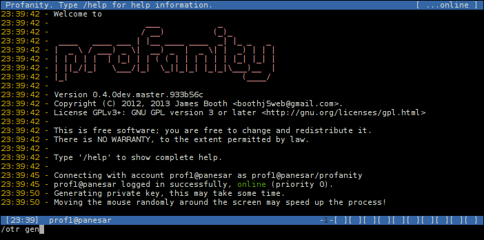
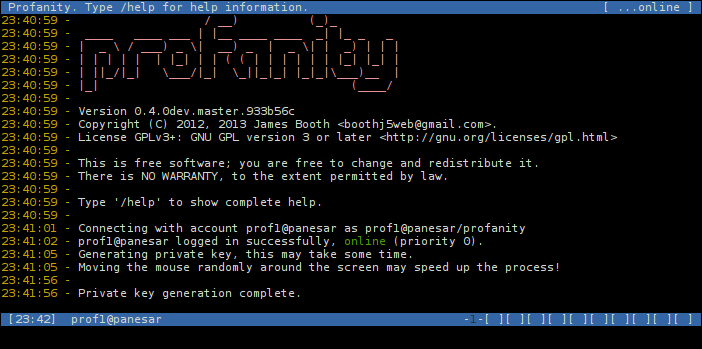
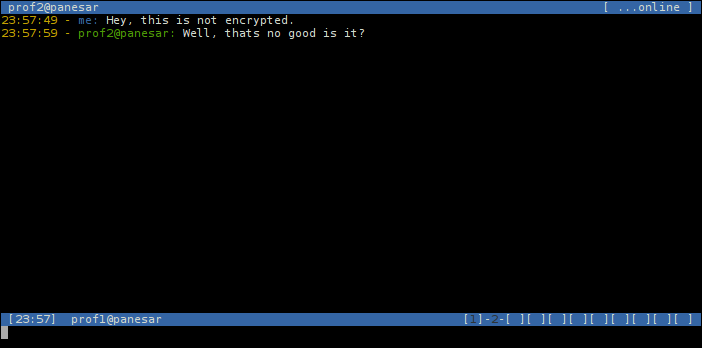
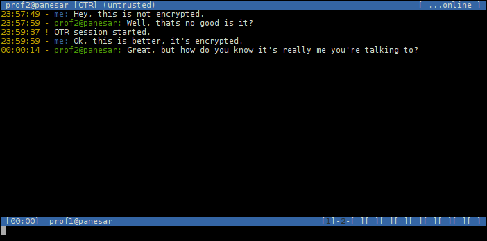
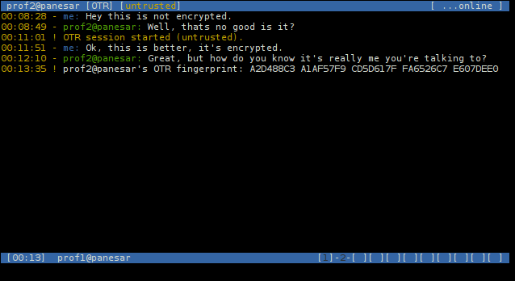
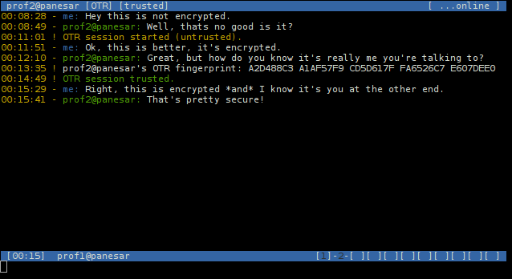
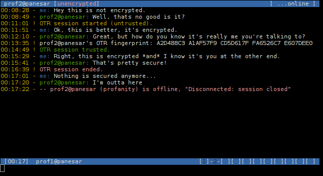

Contents
What is Off The Record messaging?
If you already know about OTR and it's benefits, you can skip the first two sections and go straight to Generating a private key.
Off The Record (OTR) messaging is a form of secure messaging, it includes encryption, authentication between users, deniability and perfect forward secrecy.
An overview and many useful resources can be found at the OTR site.
Why bother?
When talking about XMPP specifically, most chat clients talk to the chat server over Transport Layer Security. Why bother encrypting messages again?
There are two main reasons:
Firstly, since encryption happens at the transport layer, messages will be decrypted at the chat server, which may then log your conversations and view them.
Even if you trust your server not to log your messages, it's security may one day be compromised and your unencrypted messages will be available to the attackers.
Secondly, even though you can guarantee that your messages are encrypted from your client to your server, you cannot guarantee that they will be encrypted for their entire journey to your contact's client.
The messages may travel through a number of servers, and finally from a server to your contact's client, any of these journeys may be over a non TLS secured connection.
OTR is one method of Application Layer Security which guarantees your messages are encrypted from client to client, ensuring that no one else can read them.
Building with OTR support
Currently supported features are encryption and authentication. To build with OTR support, configure with the following:
./configure --enable-otrSupported libotr versions are 3.2.x, work is in progress to be compatible with 4.0.0, until implemented the configure stage may pass, but the compile will fail.
On most distributions there is simply a libotr-dev package you need to install first.
On Cygwin you will need to install the libgcrypt-devel package first. Secondly you will need libotr-devel package which is not currently in the
offical repositories. You can install it from the Cygwin Ports project.
Generating a private key
Before you can start using OTR for a particular account, you must generate a private key. Use the following command:
/otr genA message will appear informing you that the key is being generated:
A message will appear once the key has been generated:
Once you have generated a key, you will not need to do so again.
Exchanging fingerprints
Once you have a private key, you need to pass on your fingerprint to anyone you wish to have a verified OTR messaging session with. You should send this fingerprint through another communication channel.
To view your fingerprint:
/otr myfpAt this point you should also get the fingerprints of any contacts you wish to have OTR sessions with, through other means.
You may use OTR encryption without exchanging fingerprints. However, those conversations will be unverified, i.e. you cannot be sure of the identity of your contact, and they cannot be sure of yours.
Starting an OTR session
If you are already in a chat window with a contact, and you wish to make this an OTR session:
You can start the OTR session with:
/otr startIf you are not currently in a chat window with the contact, you can use the following command to open a new one, and make it secure:
/otr start prof2@panesarIf your contact is online and has OTR enabled in their chat client, a key exchange will take place. If the contact is not using an OTR enabled chat client, they may receive a message which looks like the following:
?OTR?And an OTR session will not be established.
If key exchange is successful, a message will appear, and an indicator will be shown in the title bar:
At this point you have not verified the identity of your contact, which is why (untrusted) appears in the title bar.
Verifying a contact's identity
At this point your communication is encrypted, but you are not guaranteed that your contact is who they say they are. For a trusted session, you need to verify their fingerprint.
To view the contacts fingerprint use the following command:
/otr theirfpThe contacts fingerprint will be shown in the chat window:
If the fingerprint matches the one you received using other means, then you can be sure that this is your contact. To indicate that the contact's identity is now verified, use the following command:
/otr trustThe title bar will be updated to show that this is a trusted encrypted session:
Ending an OTR session
To stop the OTR session, and go back to unencrypted untrusted communication, either close the window:
/closeOr use the following command to remain in the chat window:
/otr endA message will be displayed, and the OTR indicator will be removed from the title bar.
Subsequent chat sessions
Your private key only needs to be generated once. The key will be loaded when you connect again with this account using /connect.
Once you have trusted a fingerprint, this information is saved, subsequent OTR sessions with this contact will be automatically trusted:

You may revoke this trust with the following command:
/otr untrustOTR message logging
The /otr log command may be used with the following options to control if and how OTR messages are recorded in chat logs.
|
OTR messages will be logged in plaintext |
|
OTR messages will be logged, but the message will be replaced with the text '[redacted]'. |
|
OTR messages will not be logged. |
For the on and redact settings, chat logging must also be enabled with the /chlog command.
User Interface options
If Profanity is compiled with OTR support, the [unencrypted] warning will always appear in the titlebar for non OTR communication.
The warning can be turned off using:
/otr warn offThe colouring of the OTR notifiers in the titlebar, and system messages in chat windows can be changed in the theme, see themes.
The relevant settings are:
titlebar.unencrypted
titlebar.encrypted
titlebar.untrusted
titlebar.trusted
otr.started.untrusted
otr.started.trusted
otr.ended
otr.untrusted
otr.trusted